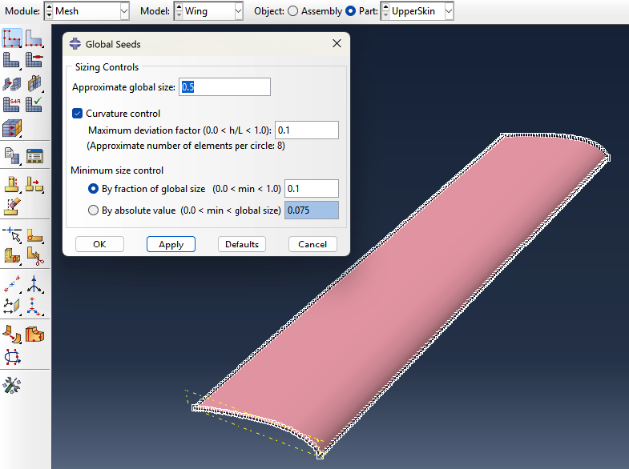
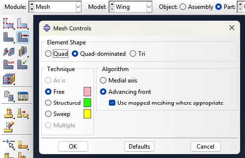
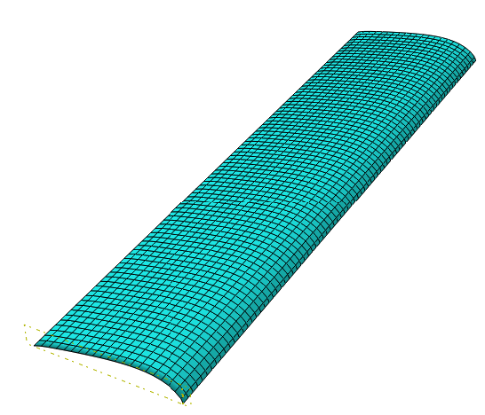
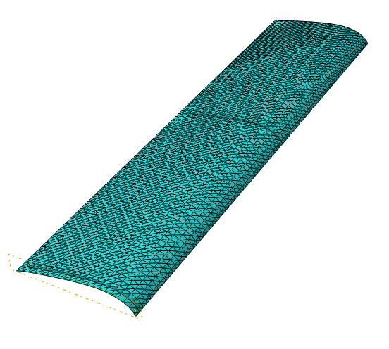

Meshing
Mesh quality directly affects the accuracy of your results. The goal is to use the right element type, refine where it matters, and keep computational cost reasonable.
How Abaqus Meshes a Part
Abaqus meshes by dividing geometry into elements based on seeds — points you place on edges that define target element size. The mesher then fills the interior using one of several algorithms. The algorithm and element shape you choose determine whether the mesh is structured, efficient, and accurate.

Meshing Algorithms
Structured — Generates a perfectly regular grid of quads or hexes. Requires simple, block-like geometry. Fastest and most accurate when it works — elements are uniform and well-shaped.
Swept — Extrudes a 2D mesh along a path. Works on geometry that has a consistent cross-section (tubes, constant-thickness webs). Produces hex-dominant meshes on 3D solids.
Free — No geometric restrictions. Works on any shape. For shells it produces quad-dominated or tri meshes; for solids it defaults to tets. Most flexible, least controlled — element quality can vary.
Bottom-Up — Fully manual. You define how regions are meshed layer by layer. Used when automated methods fail on complex geometry. Rarely needed.
Why it matters: Structured and swept meshes produce quads and hexes — better accuracy per element. Free meshing on solids defaults to tets, which require a finer mesh to match hex accuracy, increasing solve time.

Element Shape
Quads (2D) / Hexes (3D) — Preferred. Align naturally with load paths, converge faster, and handle bending well with fewer elements. S4R is a quad shell element.
Tris (2D) / Tets (3D) — Geometrically flexible but stiffer in bending. Require significantly more elements to match quad/hex accuracy. Use only where geometry forces it — transition zones, complex fillets.
Why it matters: A tet mesh may need 3–5x more elements than a hex mesh to reach the same accuracy. For large models this directly impacts solve time and memory.
%%
|
 (a) quad element shape |
 (b) tri element shape |
Reduced vs. Full Integration
This is set in Mesh → Element Type, independent of shape.
Reduced integration (R) — Fewer Gauss points evaluated per element. Faster, less prone to shear locking. Default for most structural work (S4R, C3D8R). Requires hourglass control to prevent zero-energy deformation modes.
Full integration — More Gauss points. Slower, can exhibit shear locking in bending-dominated problems if elements are too coarse. Generally avoided for shells.
Setting Up the Mesh in Abaqus
- Go to the Mesh Module
- Go to Mesh → Controls, select your parts, click Done
- Set Element Shape to Quad or Quad-dominated and Algorithm to Structured — parts turn green if structured meshing is possible
- If parts turn yellow or red, switch algorithm to Sweep or Free → Medial Axis
- Go to Mesh → Element Type and confirm S4R (reduced integration)
- Go to Mesh → Seed → Part to set global element size
- Click Mesh → Part to generate
What element type should I use?
Shell Elements (S4R / S3)
For thin-walled aerospace structures — skin, spars, ribs — shell elements are the correct choice. They assume thickness is small relative to the other dimensions, which is true for all three components here.
- S4R — 4-node quadrilateral shell, reduced integration. Default choice. Efficient and accurate for in-plane and bending loads.
- S3 — 3-node triangular shell. Use only to fill irregular mesh regions where quads won't fit. Avoid as the dominant element.
You define thickness as a section property, not through geometry — the mesh lives at the mid-surface.
Why Not Solid Elements?
Solid elements (C3D8R) require multiple elements through the thickness to capture bending accurately. For a 2mm skin, that means an extremely fine mesh for no meaningful gain. Shell elements handle bending analytically through their formulation — far more efficient.
Component-Specific Notes
Skin — S4R with fine enough in-plane mesh to capture pressure load variation. Mid-surface should align with your OML or structural reference surface.
Spar — S4R for the web and flanges. Model the caps separately if they carry distinct axial loads — keeps section properties clean.
Ribs — S4R. Pay attention to the rib-to-skin and rib-to-spar connections. Use Tie constraints if meshes don't match, or share nodes if they do.
How do I choose an appropriate mesh size?
Rules of Thumb for Shell Structures
- 5–10 elements across any curved feature (leading edge radius, rib lightening holes)
- 4–6 elements across a spar cap width
- Skin panels — start with element size ~10% of the stiffener spacing
- Avoid aspect ratios above 5:1 (length vs. width of a single element)
- Avoid interior angles below 45° or above 135° in quad elements
Stress Concentration Regions
Anywhere stress gradients are steep — fastener holes, spar-rib intersections, cutouts — mesh must be locally refined. A common approach:
- Seed the hole perimeter with 8–12 elements around the circumference
- Transition outward with a bias seed so coarser elements exist away from the feature
- Use Mesh → Seed → Edge with biased seeding for smooth transitions
How to Run a Convergence Study
- Run your model at your initial mesh size and record a key output (tip displacement, max von Mises stress at a critical location)
- Refine the global seed size by roughly half and re-run
- Compare results — if change is <5%, your coarser mesh is sufficient
- If change exceeds 5%, refine again and repeat
Setting Mesh Size in Abaqus
- Go to Mesh → Seed → Part for a global size
- Go to Mesh → Seed → Edge to control specific edges locally
- Go to Mesh → Controls to set element shape (Quad-dominated for shells)
- Go to Mesh → Element Type and confirm S4R
- Click Mesh → Part to generate
Why is partitioning important?
Partitioning means splitting a part into smaller regions — not physically, but as geometry that Abaqus uses to control meshing. It is one of the most important meshing tools because:
- It lets you control element size independently in different regions (fine near stress concentrations, coarse far away)
- It makes structured (quad/hex) meshing possible on geometry that would otherwise require unstructured tets
- It lets you align element edges with expected stress flow directions, improving accuracy
- It creates boundaries where you can apply different element types or section properties
If your model turns yellow or orange in Abaqus (indicating a free mesh of tets is required), partitioning is usually the fix.
How do I partition my geometry?
Abaqus offers several partitioning methods depending on what you are cutting:
Partition Face — Sketch Draw a line or curve on a face to split it. This is the most flexible method and works well for adding cut lines to planar surfaces.
- In the Mesh Module (or Part Module), go to Tools > Partition
- Select Face, then Sketch
- Draw the partition line and click Done
Partition Cell — Use Datum Plane Cuts a 3D solid with a flat plane. Useful for splitting a box into regions with different mesh densities.
- First create a datum plane: Tools > Datum > Plane
- Then Tools > Partition > Cell > Use Datum Plane and select the plane
Partition Cell — Extend Face Extends an existing face of the part to cut through the interior. Fast and useful when a natural surface already defines where you want to cut.
Partition Edge — Enter Parameter Splits an edge at a fractional position along its length. Useful for adding a seed point at a specific location.
General tip: Add a transition region between your fine mesh area and the coarse mesh area. Use biased seeds on the edges in the transition zone so element size changes gradually. Abrupt size jumps create poorly shaped elements with high aspect ratios that reduce accuracy.
How do I refine the mesh locally?
- Partition your geometry to isolate the region that needs refinement
- In the Mesh Module, click Seed > Edges and select the edges of the fine region
- Set a smaller element size for those edges
- Use Seed > Edges on the transition edges and enable Bias to grade gradually from fine to coarse
- Re-mesh and check quality with Mesh > Verify